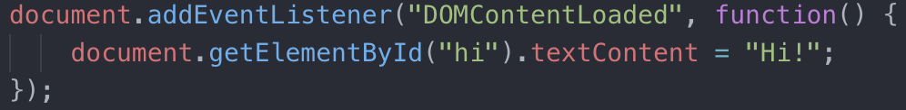

Front-End Essentials
Script in Head vs Body
(nothing placed in the Head should be visible to the user)
When the browser encounters the script tag, it will block progress on parsing the rest of the HTML on the page as it downloads (if external) the script file and executes it.
In the past, this meant putting script tags at the bottom of the body.
The modern approach is to use async or defer.
While the browser is downloading the script, it is also continuing to parse the HTML. It will execute the script as soon as it is done downloading.
Keep in mind, async scripts are not guarenteed to run in a specific order, and you should not use document.write. Instead, add event listeners:
defer:
The browser will download and execute the scripts in order after the document has been loaded.
What makes a website slow?
Web Architecture
POST https://postman-echo.com/get?arg1=value&arg2=query2#fragment_id
http:// - HyperText Transfer Protocolhttps:// - HyperText Transfer Protocol Securews:// - websocketftp:// - file transfer protocolassets.company.com
assets.company.comassets.company.com (this is the only required one)assets.company.com.com(:443)/ ...
http://localhost:8080), try to use a non-privileged port. Ports 1-1023 are special (privileged)? is the path. It says where to go.?arg1=value&arg2=query2
?, key/value pairs of arg=value, each separated with &= without a value, the key will exist and the value will be an empty string.com/monitors?res=4k&make=Dell#fragment_id like an anchor on a page. The server isn't told this information. Some apps use this to display parts of the app without needing to make network requests.Soft Skills Q&A
Ask the Interviewer:
etc?
Cache? difference between a variable that is: null, undefined or undeclared (also how to check)?a/b testing system?
python -m http.server
CommonJS vs AMD
SCSS: sass --watch input.scss output.css
Dot Game
https://www.indeed.com/hire/interview-questions/front-end-developer
Write an async queing function that execute functions put in a que. between each function execution, wait 50 mils. (know promise resolution syntax)
"When you feel yourself struggling, it means you're separating yourself from the crowd. It means you're learning something that a lot of people would've given up on by now. So embrace that feeling rather than be discouraged."
Web Design
Accessible and User-Friendly
HTML5 Features
Browser Compatibility
Structure your CSS and Javascript for Working with Others
Always-be-Learning
Useful Resources
2019 Lily Peng